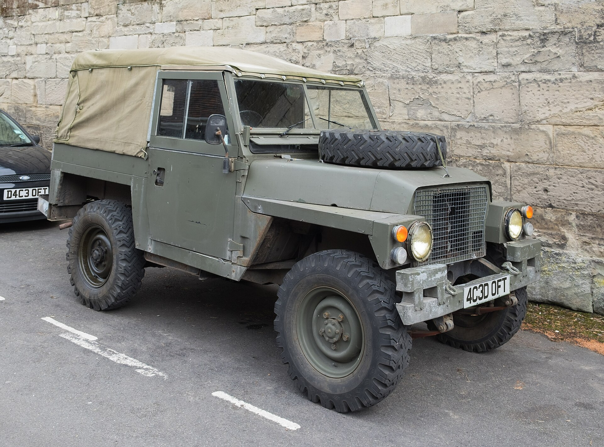
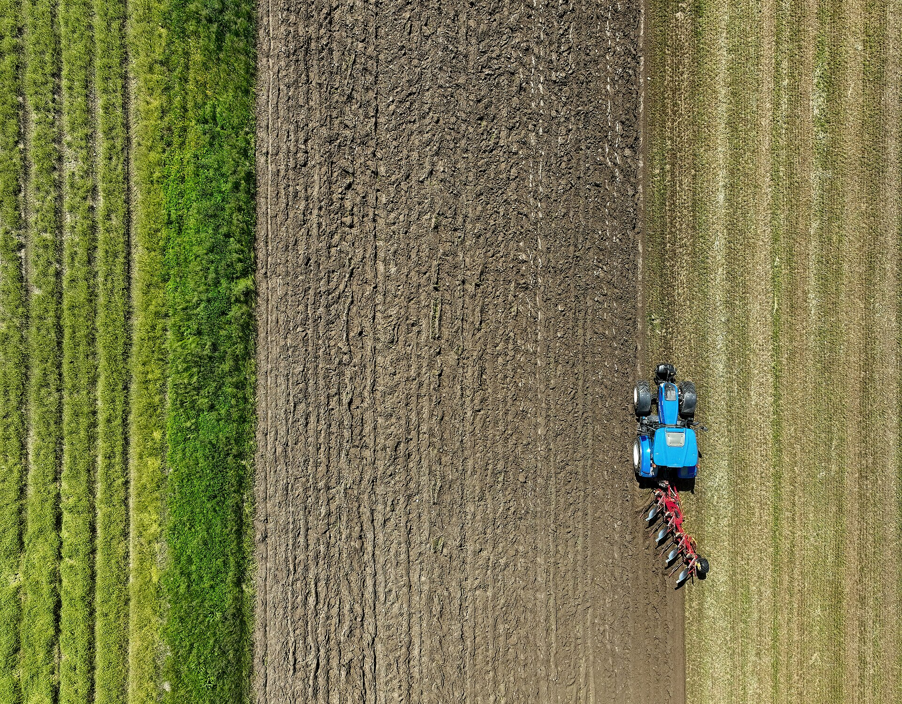
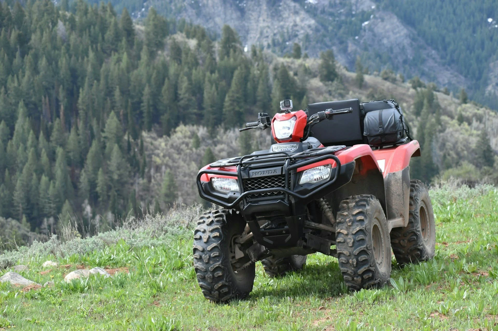
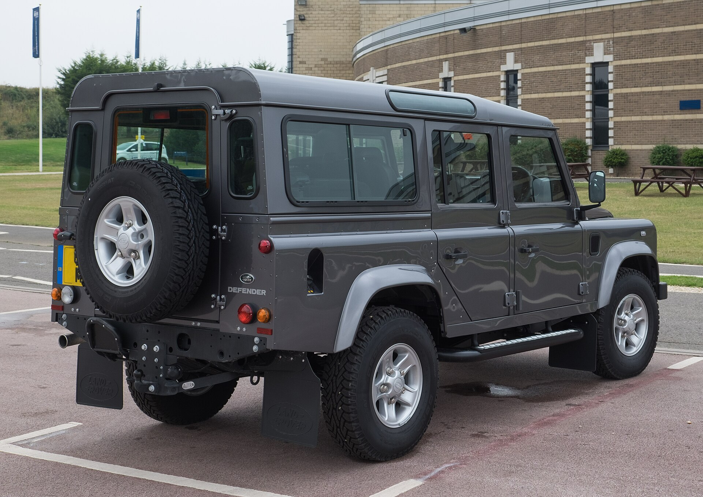

Glyn Ceiriog, Wales
Welding, fabrication and vehicle servicing, done properly.
From farm gates to tractors, Land Rovers to quad bikes. We fix it, build it and keep it running, in our workshop or at your place.
Who we are
A K Engineering is a small local workshop in Glyn Ceiriog. We work on the vehicles and kit that people here depend on every day, and we know how much it matters when one of them stops.
You deal directly with the person doing the work. We tell you what is wrong, what it will cost and what can wait, then we get on and fix it.
Coded welder BS EN ISO 9606-1
- Local Based in Glyn Ceiriog and covering the surrounding area.
- Mobile Welding and vehicle repairs at your farm, yard or driveway.
- Hands-on Welding, fabrication and servicing under one roof.
What we do
Workshop or on-site, big job or small. Ask if you do not see what you need.
-
General welding and fabrication
General repairs undertaken, including alterations and one-off fabrication in steel and more, made to fit.
-
Servicing and vehicle repairs
Routine servicing, repairs and preventative maintenance for cars, light vehicles and 4x4s. Custom work to vehicles carried out.
-
Tractors and farm machinery
Servicing, breakdown repairs and welding for tractors and the kit that goes behind them.
-
Motorcycles, quads and UTVs
Servicing and repairs for motorcycles, quad bikes and side-by-sides. Custom modifications accommodated, along with road bikes, trials and enduros.
-
Mobile welding and repairs
Cannot get it to us? We can come to you for welding and many vehicle repairs.
Call to book a visit
What our customers say
Tractor was down in the middle of the busiest week. Sorted the same day and fairly priced.
Straight answers and no fuss. Our Land Rover has never run better.
Came out to us and welded the trailer on site. Saved us a day.
Our work
The kind of vehicles and jobs we handle week in, week out.

Land Rover servicing and repairs 
Tractor servicing and repairs Welding and fabrication 
Quads and UTVs 
Defender servicing
Get in touch
Phone is quickest. Tell us what you are driving or what needs welding and we will say when we can help.